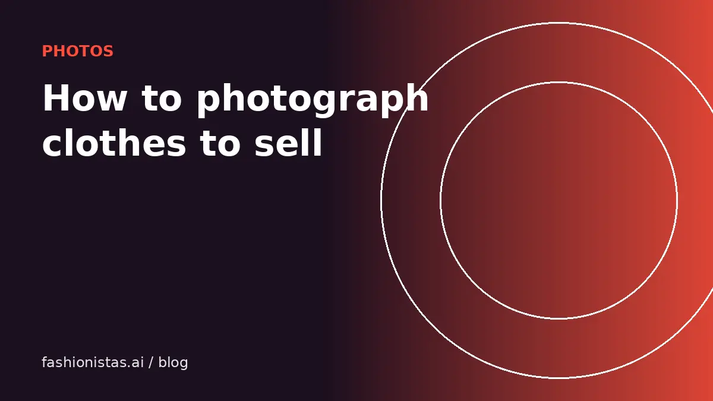

How to photograph clothes to sell online with just your phone

Your photos are your shop window. On every resale app, buyers scroll a grid of thumbnails and stop on the ones that look clear, bright and trustworthy. You don't need a camera, lights or a studio. A phone, a window and a plain background will put your listings ahead of most of the competition. Here is exactly how.
Light: use a window, not a lamp
Light is the biggest difference between photos that sell and photos that don't.
- Shoot near a large window during the day. Bright, indirect daylight shows true color and texture.
- Avoid direct midday sun. It creates harsh shadows and blows out light fabrics. If sun is streaming in, hang a white sheet over the window to soften it.
- Turn off ceiling lights and lamps. Mixing warm indoor bulbs with daylight gives a yellow or blue color cast that misrepresents the item.
- Keep the window to the side or behind you, never behind the item, or the clothes turn into a dark silhouette.
- Tap to focus and lower the exposure slightly on your phone if white areas look washed out.
Accurate color matters. "Not as described" returns often come down to a color that looked different in the photos.
Background and setup
Pick one plain background and use it for everything. A consistent closet looks like a shop, and buyers who like one item will browse the rest.
- Flat lay: a white or light gray foam board, a clean bedsheet, or a light wooden floor. Shoot straight down from directly above so the item isn't distorted.
- Hanging: a plain wall and a good-looking hanger, wooden or slim velvet, not a wire one from the dry cleaner.
- Mannequin or dress form: the best way to show shape without modeling yourself. Cheap ones work fine.
- Worn photos: very effective for fit, especially on Depop and Poshmark, but keep the background tidy and crop out clutter.
Steam or iron first. Wrinkles read as "old and tired" in a thumbnail even when the item is in excellent condition. Use a lint roller on dark fabrics; dust and pet hair show up badly on camera.
The shot list buyers expect
Most apps allow at least 8 to 12 photos. Use them. Each answers a question a buyer would otherwise message you about, or not bother to ask and scroll past.
- Cover photo: the whole item, filling most of the frame, straight on. This is what shows in search.
- Back: full back view.
- Brand label: sharp and readable.
- Size label: sharp and readable.
- Fabric and care label: fabric content sells. "100% wool" and "silk" are search terms.
- Detail close-ups: buttons, hardware, prints, embroidery, texture.
- Flaws: every one, close up, ideally with a finger or coin for scale.
- Measurements: a tape measure laid across the chest or waist in one photo builds trust. See our measuring guide.
- Worn or on a form: shows how it drapes and fits.
- Shoes and bags: add soles, insides, corners and the inside label or code.
Cover photo tips that win the scroll
Your first photo decides whether anyone opens the listing.
- Fill the frame. The item should take up most of the square. Apps crop thumbnails, so keep important parts away from the edges.
- Square format. Most resale grids show square thumbnails; shoot or crop to 1:1 so nothing is cut off.
- Shape it. For flat lays, smooth the fabric, fold sleeves naturally, and tuck in the tags. For pants, a slight angle at the knee looks more natural than a stiff straight line.
- No filters. Brightening slightly is fine; filters that change color are not.
- No borders, text or watermarks. Several apps, including Poshmark, can remove listings with watermarks or added text, and they make photos look less trustworthy.
- No stock photos as the cover. Some apps prohibit them, and buyers want to see your actual item.
Showing flaws without losing the sale
Every used item has some wear. Showing it clearly is what makes buyers trust everything else you say.
- Photograph each flaw in good light with something for scale.
- Mention it in the description in plain words: "small pinhole near left cuff, see photo 7".
- Reflect it in the price. Buyers happily buy a flawed item at a fair price. They return it when the flaw was hidden.
- Don't edit out marks, pilling or fading. It is the fastest route to a return and a bad review.
Pair honest photos with an honest condition grade and description, and returns become rare.
Photographing for virtual try-on and AI tools
Clean, front-facing photos on a plain background do double duty. They look better in feeds, and they work much better with AI tools.
When a buyer uses fashionistas.ai Try it on with your listing, the try-on model reads the garment from your cover photo. A clear, front-on, well-lit shot without hands, clutter or heavy shadows gives the most faithful result, which helps the buyer feel confident enough to purchase.
The same goes for the listing tool, which identifies the brand and item type from your photos and drafts the title and details. A readable label photo makes those details more accurate.
Common photo mistakes to avoid
- Dark, grainy photos taken at night under a ceiling bulb. Wait for daylight.
- Clutter in the frame: laundry baskets, beds, pets, people in the background.
- Shooting at an angle on flat lays, which makes items look misshapen.
- Cropping off sleeves or hems in the cover shot.
- Only one photo. Listings with a single photo look like scams or low effort.
- Mirror selfies with flash. The flash bounces and hides the item. If you want a worn photo, use a timer or a friend.
A 10-minute photo routine
Batching makes this fast. Pick a time of day with good light and do several items at once:
- Steam and lint-roll a batch of 5 to 10 items.
- Set up the background once near the window.
- Shoot every item's cover and back first, then go back for labels, details and flaws.
- Measure each item as you go and jot the numbers down.
- Crop to square and adjust brightness lightly in your phone's editor.
Ten items in an hour is realistic once you have a routine. Then crosslist them to several apps with the same photo set.
FAQ
What is the best background for photographing clothes to sell?
A plain white or light gray background, such as a foam board, sheet or light floor, in natural daylight. Use the same background for every listing so your shop looks consistent.
Is it better to photograph clothes flat or hanging?
Both work. Flat lays are easiest and look clean in grids. Hanging or on a mannequin shows shape better. Worn photos show fit best. Many sellers use a flat or hanging cover and add one worn photo.
How many photos should a resale listing have?
As many as the app allows, usually 8 to 16. At minimum: front, back, brand label, size label, fabric label, details and every flaw.
Should I use filters on resale photos?
No. Light brightness and cropping are fine, but filters that change color lead to returns for items that look different in person.
Can I use stock photos when selling clothes?
Avoid it. Several apps restrict stock photos, and buyers want to see your actual item. If you include one for reference, never make it the cover.